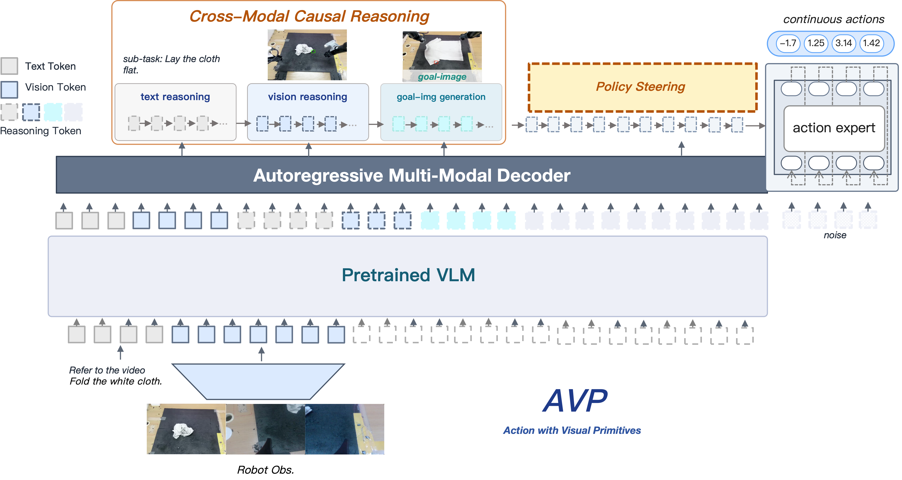
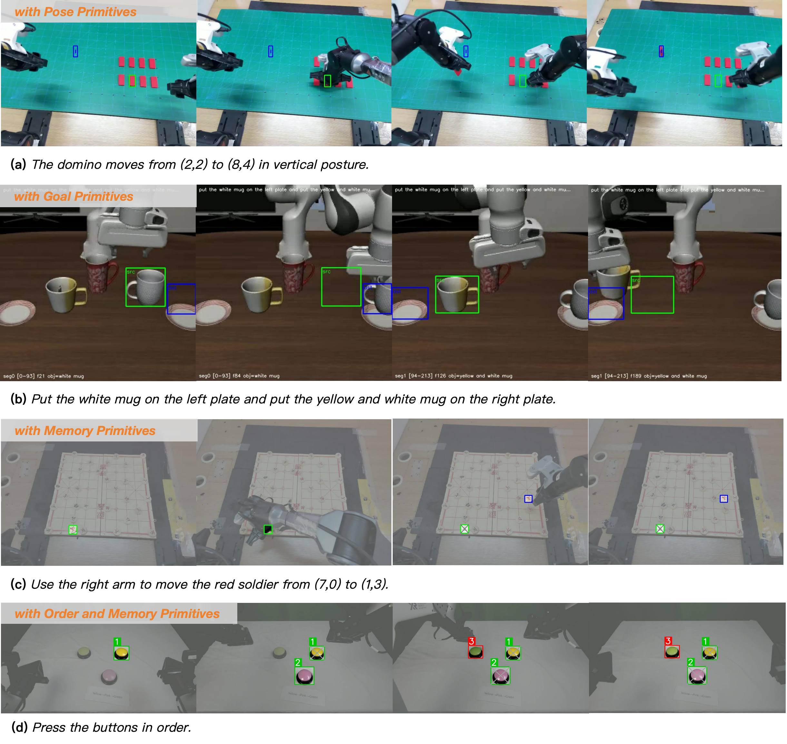

A visual‑primitive‑centric interface between the VLM and the action expert for end‑to‑end Vision‑Language‑Action models.
Vision‑Language‑Action (VLA) models commonly map language instructions and visual observations to actions in a single forward pass. While conceptually simple, this formulation entangles instruction comprehension, spatial scene understanding, and motor control within one learning objective, so the action expert must implicitly relearn cognitive and perceptual capabilities already present in the pretrained VLM.
We introduce AVP (Action with Visual Primitives), an end‑to‑end architecture that mitigates this entanglement through a visual‑primitive‑centric interface. The VLM infers the next‑stage target and emits compact, spatially grounded primitive tokens; the action expert consumes these tokens and focuses on kinematic mapping. Primitive supervision is derived directly from end‑effector kinematics, eliminating the need for manual spatial annotation. Real‑robot experiments on general pick‑and‑place tasks show that AVP improves success rate by 27.61% over π0.5 and outperforms other recent methods.
A pretrained VLM and an autoregressive multi‑modal decoder produce interleaved text / vision / goal‑image reasoning tokens. The Policy Steering channel routes the resulting visual primitives into a flow‑matching action expert that outputs continuous actions.

Visual primitives are intentionally lightweight and form‑agnostic. The same protocol covers single‑step poses, sub‑goal regions, memory‑carrying anchors that persist across frames, and ordered sequences of targets — without changing the underlying policy.

Single‑step end‑effector anchors marking a current grasp (green) and a target placement (blue). Sufficient for simple pick‑and‑place.
Each sub‑task encoded as a (source, destination) pair of object regions — the desired next state without rendering an explicit goal image.
Markers persist across frames so the model can refer to objects that are no longer visible — e.g. a chess piece's original cell after it is picked up.
Explicit ordering — each interaction target is labelled with an index (1→2→3) that turns red once executed — for sequential tasks.
A selection of real‑world rollouts: Chinese chess manipulation, multi‑instruction composition, cross‑domain generalization, and long‑horizon ordered targeting. Hover to autoplay, or use the controls.
Dense‑board sequential moves at 5× playback.
Continuous multi‑step gameplay following a full game record.
Fine‑grained pose correction of a single piece on the board.
Chained instructions executed in sequence on the red side.
Same protocol, mirrored to the black side — symmetric generalization.
Bimanual placement with target‑orientation alignment (<10° angular error).
Manipulation across diverse object appearances and geometric shapes.
Zero‑shot transfer to unseen objects and backgrounds.
Long‑horizon ordered targeting driven by memory‑and‑order primitives.
@article{guo2026avp,
title = {Action with Visual Primitives},
author = {Guo, Weilong and Wang, Yuchen and Zhou, Renping and Zhang, Yunfeng
and Fang, Rui and Meng, Yue and Xu, Wenda and He, Yuan and Huang, Gao},
journal = {arXiv preprint},
year = {2026}
}